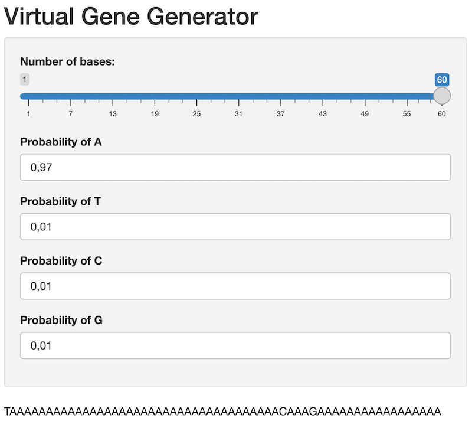

library("shiny")Lab 9 Creating a Simple Shiny Application
Package(s)
Schedule
- 08.00 - 08.30: Recap of Lab 8
- 08.30 - 09.00: Lecture
- 09.00 - 09.15: Break
- 09.00 - 12.00: Exercises
Learning Materials
Please prepare the following materials
- Book: Mastering Shiny by Hadley Wickham – Read Chapter 1 (Chapter 2 and 3 are good to read as well, if you want).
- Book: Engineering Production-Grade Shiny Apps – Read Chapter 2 - 5 (they are fairly short, but if you don’t find Shiny Apps super cool, feel free to skip Chapter 3 and 5 and Sections 2.2.2 and 4.2.3 - 4.2.4), the rest are quite important for the exercises.
- Cheatsheet: Shiny – This cheatsheet is a bit cluttered, but useful
- Cheatsheet: Golem – Look through this after reading the chapters in “Engineering Production-Grade Shiny Apps” - the exercises will remind you to look at the cheatsheet as well.
Note: The following are suggested learning materials, i.e., do not go over everything, but poke around. You will use these materials as a point of reference for the group exercises
- Shiny Input Gallery
- Web: Shiny from RStudio
- Web: RStudio tutorials on Shiny
- Video: Playlist: Web Apps in R: Building your First Web Application in R | Shiny Tutorial
- Example: nnvizRt
- More inspiration: Shiny Gallery
Unless explicitly stated, do not do the per-chapter exercises in the R4DS2e book
Learning Objectives
A student who has met the objectives of the session will be able to:
- Prepare a simple shiny application
- Using relevant online resources to autonomously identify and obtain new and expand on existing knowledge of R
Exercises
Getting Started
First, make sure to read and discuss the feedback you got from last week’s assignment!
Then, for this particular session, we will make use of Posit’s free Cloud infrastructure. Setting it up is quite easy:
- Go to posit Cloud
- Click the blue
GET STARTEDbutton - Under
Cloud Free, click the blueLearn morebutton - Click the long blue
Sign Upbutton - Enter your information for setting up an account
- Make sure to
Verify Your Emailas instructed - Then return to where you set up the account and click the blue
Continuebutton
Congratulations! You have now created your personal Posit cloud account. You will land in Your Workspace. Here you will have to create a new project, which you will use to work on the exercises today, so please:
- In the upper right corner, click the blue
New Projectbutton - Choose
New RStudio Project - Your project will be prepared and then deployed and you will land in the familiar RStudio IDE. Next to
Your Workspacein the upper left corner, click where it saysUntitled Projectand name your project, e.g.R4BDS Shiny Exercises
Now, let us do some quick setup:
- Click
Toolsand thenGlobal Options... - Under Workspace, untick
Restore .RData into workspace on startup - Next to
Save workspace to .RData on exit:, chooseNever - In the lower right corner, click
Apply - Now on the left, find and click
Pane Layoutand clickEnvironment, History, Conneand chooseConsole - In the lower right corner, click
Apply
Optionally you can adjust the visual appearance:
- Now on the left, find and click
Appearance - Under
Editor theme:, click a few options and see if you can find something you like - If you want to return to the default, simply find and click
Textmate (default)
Optionally, you can add a third column enabling you to e.g. have two Quarto Documents / Scripts / Text files open simultaneously:
- On the left, find and click
Pane Layout - Click
Add Column - Note, this is best suited for wide desktop screens, so if you change your mind, simply click
Remove Column
Once you are done, click OK to close the Options
Initial “Hello Shiny World”
Now let us get started on Shiny. First, find the console and enter:
You are going to get an error message, make sure to read it, so you can fix it.
Click here for hint
R does not know what you are asking for here. You are missing “something”, how can we install “something” we are missing? Note, here on the posit cloud you are allowed to install tools you needOnce you have fixed the error, in the console, run:
library("shiny")
runExample("01_hello")You may get a Popup Blocked message, if so, simply click Try Again. The you should see:

Now, this is the frontend of a real life Shiny app. You can try to alter the Number of bins: and see what happens.
There are a multitude of such built in examples.
- Task: Try to play around with a few of the following to get an initial feel for what you can do with Shiny and discuss what you see in your group:
runExample("01_hello") # a histogram
runExample("02_text") # tables and data frames
runExample("03_reactivity") # a reactive expression
runExample("04_mpg") # global variables
runExample("05_sliders") # slider bars
runExample("06_tabsets") # tabbed panels
runExample("07_widgets") # help text and submit buttons
runExample("08_html") # Shiny app built from HTML
runExample("09_upload") # file upload wizard
runExample("10_download") # file download wizard
runExample("11_timer") # an automated timerYour First Shiny App
Now, let us build the 01_hello-app from scratch!
- Go to your Posit Cloud session and click
File\(\rightarrow\)New File\(\rightarrow\)R Script - Now, click
File\(\rightarrow\)Save - Name the file
01_hello.R - Copy/paste the code below here into the empty file and again remember to save
- Then at the menu just above your open file, click
Run Appor use the console:runApp("PATH_TO_MY_APP") - Check if it works and compare with the
01_hello-example
Important: This is an R-script file NOT a Quarto document! Think of it as if you take all the code boxes and only include those in your file.
Code for your first app
# Load the Shiny library
library("shiny")
# Define the User Interface (Frontend)
ui <- fluidPage(
titlePanel("Hello Shiny!"),
sidebarLayout(
sidebarPanel(
sliderInput(inputId = "bins",
label = "Number of bins:",
min = 1,
max = 50,
value = 30)
),
mainPanel(
plotOutput(outputId = "distPlot")
)
)
)
# Define the Server (Backend)
server <- function(input, output) {
output$distPlot <- renderPlot({
x <- faithful$waiting
bins <- seq(min(x), max(x), length.out = input$bins + 1)
hist(x, breaks = bins, col = "#75AADB", border = "white",
xlab = "Waiting time to next eruption (in mins)",
main = "Histogram of waiting times")
})
}
# Launch the shiny app
shinyApp(ui = ui, server = server)- Task: In your group, compare the code with the below illustration of the anatomy of your first shiny app. Pay specific attention to the
input- andoutput-variables and how theinputId = "bins"end up ininput$bins. This front-to-back-end communication is central!

- Task: To further understand what is going on, we can ask constructively for input. Let us use your favourite LLM-technology as a sparring partner, e.g. you can cope/paste the following into a chatGPT prompt:
I am following the university course "R for Bio Data Science".
Today we are learning about Shiny, which is completely new to me.
The first thing we have done is to re-create a small shiny app,
which is part of the examples in the Shiny-package. Moreover,
it is the example which can be seen by running the code:
`runExample("01_hello")`
Now, we have manually implemented the app, but I am not certain
of how it works and the details. In the following, I will
paste the code from the app. Please in details, minding that I
am a begginer, explain the details of the code:
PASTE THE APP CODE HERE- Task: Furthermore, let us also get some input on how the illustration above maps to the code. Right-click the “Shiny” image above and save it to disk, then copy/paste the following into the same prompt:
The lecturer has given me this graphical illustration,
but I am not sure I understand how it maps to the code,
can you please explain?
REMEMBER TO UPLOAD THE IMAGE
- Task: Now, look at the answers you got, if something is unclear, ask for an elaboration, e.g.:
I have not seen the terms "user interface" or "frontend"
or "backend" before. Please briefly explain, what these
mean and how they are related to building shiny apps Note here, how we using the LLM-technology productively as a sparring-partner. Instead of asking it to produce code, we ask it to explain existing code and to elaborate on any unclear specifics
Your Second Shiny App
We will continue where we left of last week. To make sure, that everyone is working with the same functions, we will use the functions outlined below here. Remember the task here is to build an interface, which allow people without coding skills to interact with data.
Let’s get started!
Click here for functions
Please note, that as an example of reducing dependencies, these functions are implemented using base R. In case you are not familiar, here again is a prime example of using LLM-technology such as e.g. chatGPT as a sparring partner. Try to submit the following prompt:
I am not familiar with base R, I only know tidyverse R.
For the following function and R-code, please explain
in detail how the used base R functions work and what
the code in its entirety does:
PASTE THE BASE R CODE OF A FUNCTION HEREVirtual Gene
# Virtual gene
gene_dna <- function(length, base_probs = c(0.25, 0.25, 0.25, 0.25)){
if( length %% 3 != 0 ){
stop("The argument to the parameter 'l' has to be divisible by 3")
}
dna_vector <- sample(
x = c("A", "T", "C", "G"),
size = length,
replace = TRUE,
prob = base_probs)
dna_string <- paste0(
x = dna_vector,
collapse = "")
return(dna_string)
}Virtual RNA Polymerase
# Virtual RNA polymerase
transcribe_dna <- function(dna){
rna <- gsub(
pattern = "T",
replacement = "U",
x = dna)
return(rna)
}Virtual Ribosome
# Virtual Ribosome
translate_rna <- function(rna){
if( is.null(rna) || rna == "" ){ return("") }
l <- nchar(x = rna)
firsts <- seq(
from = 1,
to = l,
by = 3)
lasts <- seq(
from = 3,
to = l,
by = 3)
codons <- substring(
text = rna,
first = firsts,
last = lasts)
codon_table <- c(
"UUU" = "F", "UCU" = "S", "UAU" = "Y", "UGU" = "C",
"UUC" = "F", "UCC" = "S", "UAC" = "Y", "UGC" = "C",
"UUA" = "L", "UCA" = "S", "UAA" = "_", "UGA" = "_",
"UUG" = "L", "UCG" = "S", "UAG" = "_", "UGG" = "W",
"CUU" = "L", "CCU" = "P", "CAU" = "H", "CGU" = "R",
"CUC" = "L", "CCC" = "P", "CAC" = "H", "CGC" = "R",
"CUA" = "L", "CCA" = "P", "CAA" = "Q", "CGA" = "R",
"CUG" = "L", "CCG" = "P", "CAG" = "Q", "CGG" = "R",
"AUU" = "I", "ACU" = "T", "AAU" = "N", "AGU" = "S",
"AUC" = "I", "ACC" = "T", "AAC" = "N", "AGC" = "S",
"AUA" = "I", "ACA" = "T", "AAA" = "K", "AGA" = "R",
"AUG" = "M", "ACG" = "T", "AAG" = "K", "AGG" = "R",
"GUU" = "V", "GCU" = "A", "GAU" = "D", "GGU" = "G",
"GUC" = "V", "GCC" = "A", "GAC" = "D", "GGC" = "G",
"GUA" = "V", "GCA" = "A", "GAA" = "E", "GGA" = "G",
"GUG" = "V", "GCG" = "A", "GAG" = "E", "GGG" = "G")
protein <- paste0(
x = codon_table[codons],
collapse = "")
return(protein)
}Simple base counts
# Simple base counts
base_freqs <- function(dna){
if (is.null(dna) || dna == "" ){
return( data.frame(dna_vec = factor(c("A", "C", "G", "T")),
Freq = c(0, 0, 0, 0)) ) }
dna_vec <- strsplit(x = dna,
split = "")
base_counts <- table(dna_vec)
return( as.data.frame.table(base_counts) )
}Building a Virtual Gene Generator
Version 1, the basics
Below here, you will find some boilerplate code, which is based on what you saw in the 01_hello-example.
- Task: Look at this code and compare it to your first shiny app, discuss the changes in your group, what do you see?
- Task: Create your second Shiny App in a new file
virtual_gene_generator.R, copy/paste making sure to insert the code needed for the functiongene_dna()(See code for functions above) - Task: Run the App and in your group, discuss how it works
library("shiny")
# Define the "Virtual Gene"-function (See code for functions above)
gene_dna <- ...
# Define the User Interface (Frontend)
ui <- fluidPage(
titlePanel("Virtual Gene Generator"),
sidebarLayout(
sidebarPanel(
sliderInput(inputId = "n_bases",
label = "Number of bases:",
min = 1,
max = 60,
value = 30)
),
mainPanel(
textOutput(outputId = "dna")
)
)
)
# Define the Server (Backend)
server <- function(input, output) {
output$dna <- renderText({
gene_dna(length = input$n_bases)
})
}
# Launch the shiny app
shinyApp(ui = ui, server = server)Version 2, expanding
Now, if you look at the code for the gene_dna-function, it has a second parameter base_probs with the default argument c(0.25, 0.25, 0.25, 0.25). Let us now expand, so your app allows the user to define the individual base probabilities.
- Task: Expand the
uiwith onenumericInput()for each of the four bases defining the probability of drawing that base and pass those numbers onto theserver
Need a hint?
Recall, that you in the console can type ?numericInput and get help on the function. Try to do so and compare with the sliderInput() you already have defined in your app.
Need a hint more?
TheinputId defines the “name” of what is passed to the server, e.g. if you look at the sliderInput() it uses inputId = "n_bases", which is then passed to the server as input$n_bases
Need just one hint more?
In your ui, you have to find room for:
numericInput(inputId = "prob_A",
label = "Probability of A",
value = 0.25,
min = 0,
max = 1)In your server you have to find room for:
base_probs = c(input$prob_A, 0.25, 0.25, 0.25)prob_T, prob_C and prob_G
Once you are up and running, your app should look something like this:

- Task: Update the
gene_dna()-function in your app to check if the probabilities sum to 1 and make sure output a meaningful error message, if they do not
Need a hint?
Thegene_dna()-function already checks it the length of the DNA is divisible by 3, use this as inspiration to add your own check. If you are uncertain on how to compute the sum() of a vector in R, try to google a bit…
A bit more advanced hint
Actually, you should be careful when comparing numbers when you create apps or any analysis code. If you sum a large vector, you might experience, that even when the sum should be equal to 1, it will fail a direct comparison, such assum(p) == 1. This has to do with internal representation of numbers in a computer resulting in small rounding errors. Therefore, it is safer to use e.g.: abs(sum(p) - 1) < 1e-10, i.e. is the difference between my sum and the number 1 smaller than some very small number.
Controlling the Layout
By now your base app is up and running, but you may want to tinker with the layout of the user interface. We can do so using the card()-function from the bslib-package:
Click to expand app code
# Define the User Interface (Frontend)
ui <- page_fluid(
layout_columns(
col_widths = 12,
card(
titlePanel("Virtual Central Dogma"),
style = "background-color: #f0f0f0; padding: 15px;"
)),
layout_columns(
col_widths = 12,
card(
titlePanel("About"),
helpText("Describe what your app does...")
)),
layout_columns(
col_widths = 12,
card(
card_header("Virtual Gene Generator"),
sliderInput(inputId = "n_bases",
label = "Number of bases:",
min = 1,
max = 60,
value = 30,
width = "100%"),
layout_columns(
col_widths = c(3, 3, 3, 3),
numericInput(inputId = "prob_A",
label = "Probability of A",
value = 0.25,
min = 0,
max = 1,
step = 0.1),
numericInput(inputId = "prob_T",
label = "Probability of T",
value = 0.25,
min = 0,
max = 1,
step = 0.1),
numericInput(inputId = "prob_C",
label = "Probability of C",
value = 0.25,
min = 0,
max = 1,
step = 0.1),
numericInput(inputId = "prob_G",
label = "Probability of G",
value = 0.25,
min = 0,
max = 1,
step = 0.1)
))),
layout_columns(
col_widths = 12,
card(
card_header("Virtual Gene output"),
mainPanel(
verbatimTextOutput(outputId = "dna")
)
))
)- Task: Update your app using the above
card()-function layout. Remember to load thebslib-package.
It’s Complicated…
As you have probably realised by now, the final app can be rather many lines of code defining the user interface and likewise for the server and also associated functions. To address this, it is recommendable to divide your app into seperate files mimicking the illustration of the anatomy of a Shiny app. To do so, we will need four files:
- The functions:
app_functions.R - The user interface:
ui.R - The server:
server.R - The app:
virtual_central_dogma.R
The latter will look something like this:
# Load needed libraries
library("PACKAGE_NAME")
# Load needed functions
source(file = "app_functions.R")
# Run the frontend user interface ui.R
source(file = "ui.R")
# Run the backend server server.R
source(file = "server.R")
# Run the Shiny app
shinyApp(ui = ui, server = server)- Task: First make sure, that your app runs as is and then create these four files and copy/paste the approproiate code into each of the files
Completing the Central Dogma
So far you have just been working with the gene_dna()-function, but we naturally have to also include:
- Transcription
- Translation
- A bit of analysis
If you scroll a bit back, you were given some pre-built code for the following functions:
gene_dna()transcribe_dna()translate_rna()base_freqs()
Right then:
- Task: Expand your app to include the central dogma functions
gene_dna(),transcribe_dna()andtranslate_rna(). Note that any further analysis, such as e.g.base_freqs()or similar is optional
A bit of help to get you started:
- You can find an overview of the different input controls here
- Use manual copy/paste when transferring DNA to RNA to Protein (Naturally, this can be done automatically, but that’s a completely different can of worms)
- Perhaps you could look at the
01_hello-example to get some inspiration on how you can include aggplotof your nucleotide frequency analysis
Getting Your Shiny App LIVE!
Note, when we publish our app, each file will be “build” and this will create errors if some functions are not found. Therefore, make sure to include library("PACKAGE_NAME") in each files for all needed libraries and source the app_functions.R file where it’s needed too.
- Go to shinyapps.io
- Log in or create an account
- Go back to your RStudio session and launch your Shiny App
- In the upper right corner, it’ll say “Publish”
- You may get prompted to install some packages, so go ahead and do so
- You will then get prompted to “Connect Publishing Account”, click “Next”
- Choose your “ShinyApps.io” account
- Follow the outlined connect procedure
- Choose a “Title” for your app
- Click “Publish”
After some automated build procedures, your Shiny App is LIVE - CONGRATULATIONS!
NB! If you an error saying:
- “An error has occurred! An error has occurred. Check your logs or contact the app author for clarification.”
Then likely, there is a problem withs paths or libraries, did you remember to start this last part as a seperate project? Also, did you remember to include library definitions and source the app_functions.R file in all the necessary files?
GROUP ASSIGNMENT (Important, see: how to)
For this week’s assignment you have to:
- Create a new Github repository, name it
group_XX_shiny, whereXXis your group name, e.g.06 - Finish the Central Dogma shiny app by Github collaborating (Psst… Perhaps branching and delegate specific cards to group members would be prudent)
- Publish your finished shiny app to shinyapps.io
- Place the link to your published app in the README of the repository
- For your assignment hand in, simply create a text file containing the link to your group Github repository containing your shiny app
You app should contain the central dogma functions gene_dna(), transcribe_dna() and translate_rna(), but any further analysis, such as e.g. base_freqs() or similar is optional. Please feel free to style your app as you please